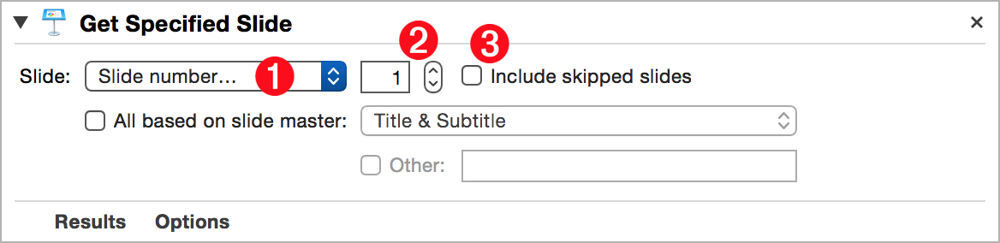
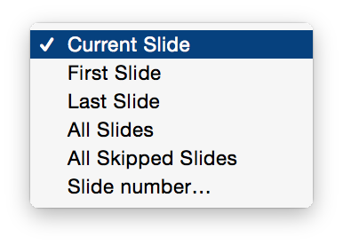
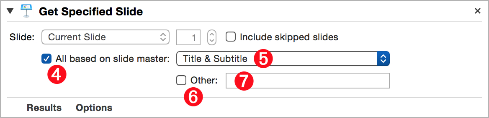

The Keynote document actions are used to create the presentation containing the slides that combine to convey your message. The slide actions build the content and setup the delivery of the slideshow. This action collection offers the tools for adding and editing all of the default and custom slide masters you may incorporate in your presentation.
This action is used to locate and pass on references to slides that meet the specified criteria. It is often followed in workflows by other actions that manipulate the properties of slides.
The Action Information
| Input: | An AppleScript reference to the Keynote document containing the slide or slides to identify. NOTE:
|
| Output: | A list of AppleScript references to the specified slide or slides. |
| Parameters: | User-settable parameters include:
|
The Action Interface

1 Specifying Method Menu • This menu (⬇ see below ) displays the options for identifying slides. Slide can be identified by index (first, last, all, number), or state (current, skipped). To specify by a slide’s master slide, select the checkbox below the menu 4

2 Slide Number|Index • To specify a slide by slide number, uncheck the include skipped option 3 and enter the slide number in this input. To specify a slide by slide index, check the skipped option 3 and enter the slide index in this input.
3 Include Skipped Option • The state of this option determines whether the numeric value of the input represents the slide number or index.

4 Identify by Slide Master • When this option is selected, the previous numeric methods are disabled and the action will locate all slides whose slide master title is either: selected in the Slide Masters popup menu 5 or is entered in the Master Title text input field 7
5 Slide Masters Menu • A list of the names of the standard default master slides.
6 Use Custom Master • Select this option to search using a custom master slide whose name is entered in the text input field 7
7 Custom Master Name • Enter the name of the custom master slide to search for.